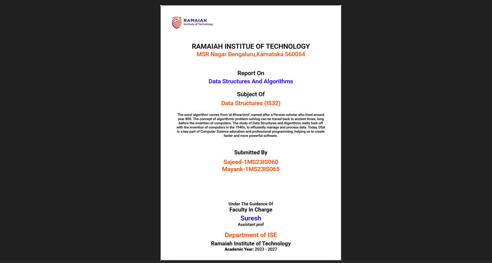
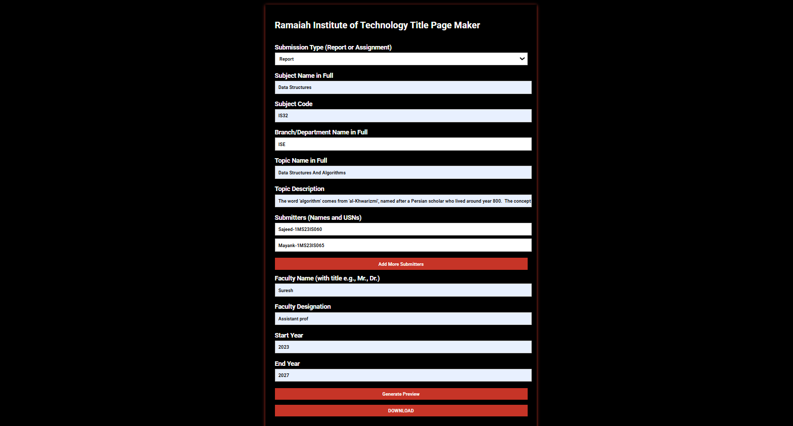

TPG
| Type | Document Generator |
| Status | Active Development |
| Frontend | HTML / CSS / JavaScript |
| Rendering | html2canvas |
| Deployment | tpg-rit.vercel.app |
| Repository | GitHub |
Overview
TPG is a lightweight web application designed to automate the creation of academic title pages for reports and assignments.
The system generates structured title pages using user-provided inputs such as subject details, faculty information, submitter names, academic year, and topic descriptions.
Instead of manually formatting title pages repeatedly, the application provides a standardized generation workflow focused on speed, consistency, and simplicity.
Workflow
Users fill out a structured form containing academic and submission details.
Once the form is completed, the system dynamically generates a formatted preview page which can then be downloaded as an image.
User Input Form
↓
Dynamic Data Binding
↓
Preview Generation
↓
html2canvas Rendering
↓
Downloadable Title Page
Features
- Report and assignment generation modes
- Multiple submitter support
- Faculty information integration
- Dynamic preview generation
- Academic year display
- Image export support
Generation System
The generation process is handled entirely on the client side using JavaScript.
Form inputs are mapped directly into a preview container where placeholders are dynamically replaced with generated content.
| Component | Purpose |
|---|---|
| Form Inputs | Collect academic metadata |
| Preview Renderer | Displays formatted title page |
| Submitter Manager | Handles multiple contributors |
| html2canvas | Exports preview as image |
Implementation
The application uses a lightweight frontend architecture without external frameworks.
- HTML
- CSS
- JavaScript
- html2canvas
Dynamic content rendering is handled through direct DOM manipulation and runtime preview updates.
Screenshots


Development Notes
The project originated from the repetitive process of manually formatting assignment and report title pages for academic submissions.
Development focused on minimizing friction while maintaining consistent visual formatting across generated pages.
The current system prioritizes simplicity and fast generation over heavy customization workflows.